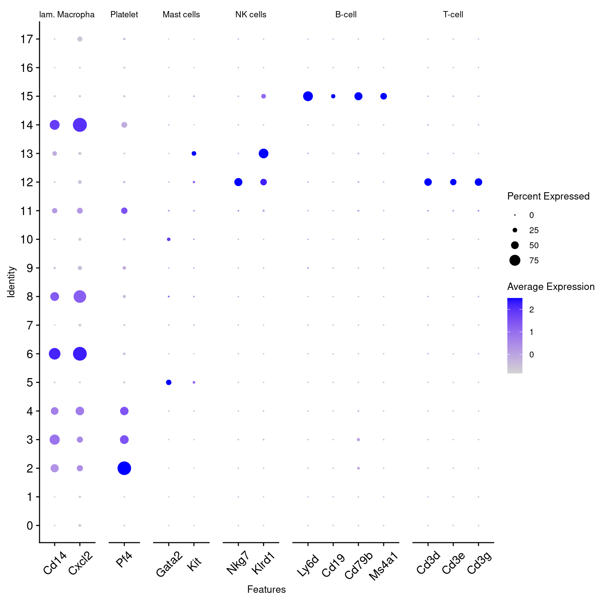
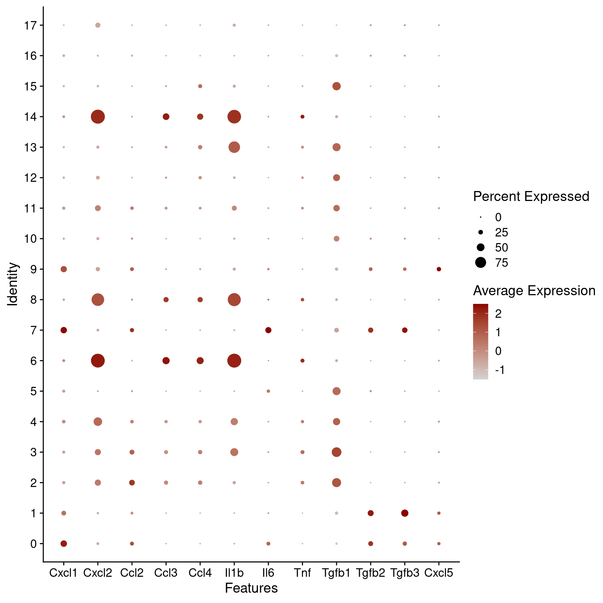
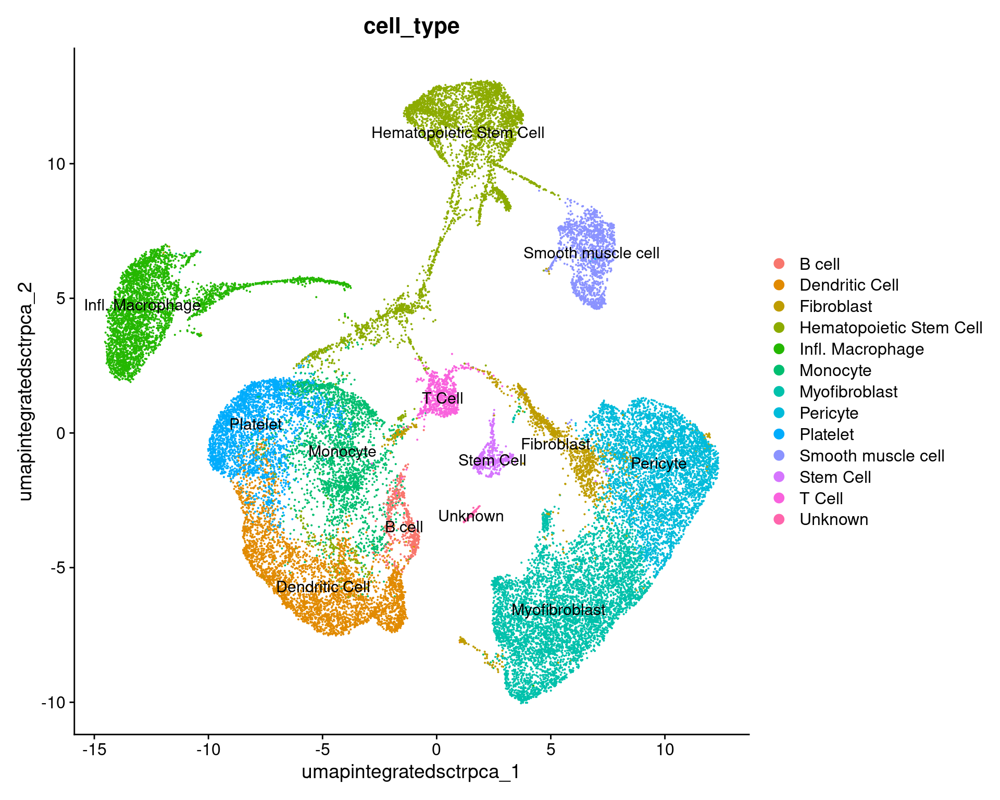

Cell Type Annotation
UM Bioinformatics Core Workshop Team
2025-03-28
Workflow Overview
Introduction
| Starting with clustered data, we can summarize and compare gene expression for known gene markers within each cluster, irrespective of sample or condition, to help label clusters with the appropriate cell-type or subtype. |
A frequent bottleneck in single-cell analysis is annotating the
algorithmicly generated clusters, as it requires bridging the gap
between the data and prior knowledge (source).
While generating markers for each cluster it important, it may or may
not be sufficient to assign cell-type or sub-type labels without
bringing in additional sources.
Objectives
- Understand the complexities of cell-type annotation
- Use
scCATCHcell-type predictions to annotate our clusters
Like the previous sections, the steps to assign cell-types to
clusters might require some iteration, can be very dataset dependent,
and often is more challenging for less characterized tissues.
Cell type predictions
Automated tools have the advantage of being able to compare between the expression patterns in our dataset and large numbers of reference datasets or databases at a scale that is not feasible to do manually.
As described in more detail by the Ouyang Lab and summarized in the figure below, there are many computational tools that aim to assign cell type labels for single-cell data. These methods generally fall into three categories:
- Marker based approaches that use gene sets drawn from the literature, including previous single-cell studies,
- Correlation based approaches that estimate the similarity between the cells or clusters in the input data and some reference data
- Machine learning approaches that include training on a single-cell reference atlas.

However, across any of these approaches the quality of the reference data (and reliability of the authors labels) and relevancy to your specific tissue/experiment (and the resolution of your biological question) is crucial. Additionally, it’s important to consider that rare or novel cell populations may not be present or well-characterized in available references and that even after filtering, some clusters might correspond to stressed or dying cells and not a particular cell-type or subtype. Therefore, any prediction should be reviewed and considered in the context both marker gene expression for the dataset and knowledge of the biological system and broader literature.
Some tools and references are available solely or primarily for human tissues (and not mouse or rat), particular for tissues other than PBMCs and the brain. For human data, if a relevant reference is available for your experiment, we would recommend trying Azimuth (created by authors of Seurat). 10x has a tutorial that includes example of using Azimuth, including a feature of the tool that allows for first pass of cell-type assignment of more common cell-types followed by identifying rarer populations that may not be identified in the first pass.
Additional automated annotation resources
Automated cell-type annotation is an active area of research and development and many other tools and resources are available, including OSCA’s demonstration of the SingleR method, a Tutorial by Clarke et al. for cell-type annotations, and an entire chapter of the SC best practices book.Using scCATCH
A tool we often use for both mouse and human data cell-type predictions is called scCATCH which, per the author’s description in Shao et al (2020), annotates cell-types using a “tissue-specific cellular taxonomy reference database (CellMatch) and [an] evidence-based scoring (ES) protocol”. The CellMatch reference is compiled from CellMarker (Zhang et al., 2019b), MCA (Han et al., 2018), CancerSEA (Yuan et al., 2019), and the CD Marker Handbook and PMIDs for relevant literature are reported in the prediction results.

First, we need to load the scCATCH library. Then, we’ll double check
that we are using the expected resolution cluster results (this is
particularly important if we generated multiple resolutions in our
clustering steps), before creating a new object from our
counts data with createscCATCH() and adding
our marker genes to the scCATCCH object.
To increase the speed and accuracy of our predictions, we’ll create query of relevant tissues (which requires some prior knowledge of the experiment and using the scCATCH wiki to select tissues from the species) before we run the tool:
##### Day 3 - Cell Type Annotation
# Load scCATCH -----------------------------------------------------------
library(scCATCH)
# check that cell identities are set to expected resolution
all(Idents(geo_so) == geo_so$integrated.sct.rpca.clusters)[1] TRUE# Annotate clusters using scCATCH ----------------------------------------
# create scCATCH object, using count data
geo_catch = createscCATCH(data = geo_so@assays$SCT@counts, cluster = as.character(Idents(geo_so)))
# add marker genes to use for predictions
geo_catch@markergene = geo_markers
# specify tissues/cell-types from the scCATCH reference
geo_catch@marker = cellmatch[cellmatch$species == 'Mouse' & cellmatch$tissue %in% c('Blood', 'Peripheral Blood', 'Muscle', 'Skeletal muscle', 'Epidermis', 'Skin'), ]
# run scCATCH to generate predictions
geo_catch = findcelltype(geo_catch)
# look at the predictions
geo_catch@celltype %>% select(cluster, cell_type, celltype_score) cluster cell_type celltype_score
1 0 Pericyte 0.75
2 1 Stem Cell 0.83
3 2 Monocyte 0.82
4 3 Hematopoietic Stem Cell 0.92
5 4 Macrophage 0.82
6 5 Dendritic Cell 0.86
7 6 Muscle Progenitor Cell 0.73
8 7 Hematopoietic Stem Cell 0.87
9 8 Hematopoietic Stem Cell 0.87
10 9 Hematopoietic Stem Cell 0.88
11 10 Muscle Satellite Cell 0.93
12 11 Regulatory T Cell 0.9
13 12 Dendritic Cell 0.85
14 13 Dendritic Cell, Monocyte, Progenitor Cell 0.71, 0.71, 0.71
15 14 Dendritic Cell 0.86
16 15 Muscle Progenitor Cell 0.71
17 16 Stem Cell 0.84
18 17 CD8+ T Cell 0.88
19 18 Muscle Cell 0.69When we look at our results we can see the cell type score, which
gives us an idea of the confidence of that prediction. Not shown here
but the full celltype table also includes marker genes and
PMIDs for relevant literature for each prediction.
In our experience, these kinds of results often help guide cluster annotation but scores can vary and the predictions may need to be revised based on researcher’s knowledge of the biological system. As these cell-types correspond to the cell-types and subtypes we’d expect to be present in these data and most of the prediction scores are quite high, we can reasonably use these results to annotate our clusters with some minor adjustments.
Using known cell-type markers
To confirm and refine the scCATCH predictions, we’ll spot check some known markers for immune populations. Then we’ll look look at some other key marker genes from some other relevant resources like Chen et al (2021), Buechler et al (2021) Roman (2023), Li et al (2022) and Nestorowa et al (2016) to see if other modifications should be made to the scCATCH predictions:
# Create lists of immune cells and associated gene markers --------------
immune_markers = list()
immune_markers[['Inflam. Macrophage']] = c('Cd14', 'Cxcl2') # Cd14 a- monocyte/macrophage cells
immune_markers[['Platelet']] = c('Pf4')
immune_markers[['Mast cells']] = c('Gata2', 'Kit')
immune_markers[['NK cells']] = c('Nkg7', 'Klrd1')
immune_markers[['B-cell']] = c( 'Ly6d', 'Cd19', 'Cd79b', 'Ms4a1')
immune_markers[['T-cell']] = c( 'Cd3d','Cd3e','Cd3g') # also Thy1# Plot other immune to assist with cluster identification ---------------
immune_markers_plot = DotPlot(geo_so, features = immune_markers, assay = 'SCT') +
theme(text=element_text(size=10), axis.text.x = element_text(angle = 45, vjust = 0.5))
immune_markers_plot
# save to file
ggsave(filename = 'results/figures/immune_markers_sct_dot_plot.png',
plot = immune_markers_plot, width = 10, height = 5, units = 'in')
# Create lists of other cells and associated gene markers ---------------------------------------
other_markers = list()
other_markers[['Pericyte']] = c('Acan','Sox9')
other_markers[['SMC']] = c('Acta2', 'Myh11') # SMC = mesenchymal smooth-muscle cell/mesenchymal lineage
other_markers[['Keratinocytes']] = c('Thy1', 'Dlk1') # fibro progenitors aso=Thy1
other_markers[['Myofibroblasts']] = c('Tmem100', 'Cd34', 'Ly6c1') # hematopoetic stem/activated fibroblast=Cd34
other_markers[['Fibroblast']] = c('Dpt', 'Fn1', 'Col3a1') # activated fib = Fn1
other_markers[['Endothelial']] = c('Pecam1', 'Cd38') # from wound healing; Pecam1 also exp in endothelial
other_markers[['HSC']] = c('Ltb', 'Cd74') # less well defined/conflicting definitions
other_markers[['Erythroid']] = c('Hba-a1')# Plot known cell-type markers ---------------------------------------
other_markers_dot_plot = DotPlot(geo_so, features = other_markers, assay = 'SCT') +
theme(text=element_text(size=10), axis.text.x = element_text(angle = 45, vjust = 0.5))
other_markers_dot_plot
# save to file
ggsave(filename = 'results/figures/other_markers_sct_dot_plot.png',
plot = other_markers_dot_plot, width = 12, height = 5, units = 'in') In the first plot, B-cell and T-cell markers seem to line up with the
predictions and are limited to single clusters. However, macrophage and
dendrocyte markers match to multiple clusters including some annotated
with different cell types, so we can consider modifying those cluster
labels.
In the first plot, B-cell and T-cell markers seem to line up with the
predictions and are limited to single clusters. However, macrophage and
dendrocyte markers match to multiple clusters including some annotated
with different cell types, so we can consider modifying those cluster
labels.
From the other marker genes, the patterns are less clear so we may want to test other clustering parameters and discuss the results with a researcher familiar with the expected cell types. However, we can notice some patterns that we can use to refine our cluster annotations.
Utilizing genes of interest from the original paper
Plotting the expression of genes of interest from Sorkin, Huber et al
Often we have prior information about what cell types are expected in
our samples and key marker genes for those populations. This can be an
important part of evaluating our clusters, since if genes that are known
markers for a specific cell type are found in too many or too few
clusters as that can suggest that re-clustering is needed or that some
of the clusters should be manually combined before annotating. We can
create lists of markers used in figures from the original
paper before using the same DotPlot() function to
visualize the expression level and frequency of these genes in our
current clusters:
# Visualize manually selected marker genes --------------------------------
# Create lists of genes from paper
fig1g_markers = c('Cxcl1', 'Cxcl2', 'Ccl2', 'Ccl3', 'Ccl4', 'Il1b', 'Il6b', 'Tnf', 'Tgfb1', 'Tgfb2', 'Tgfb3', 'Cxcl5')
fig1h_markers = c('Cxcr2', 'Csf1r', 'Csf3r', 'Tgfbr1', 'Tgfbr3', 'Il1r1', 'Il6ra', 'Lifr', 'Tgfbr2')
# create DotPlots for genes from paper
fig1g_sct_dot_plot = DotPlot(geo_so, features = fig1g_markers, assay = 'SCT')Warning: The following requested variables were not found: Il6bfig1h_sct_dot_plot = DotPlot(geo_so, features = fig1h_markers, assay = 'SCT')
# save plots to file
ggsave(filename = 'results/figures/markers_fig1g_sct_dot_plot.png',
plot = fig1g_sct_dot_plot, width = 8, height = 6, units = 'in')
ggsave(filename = 'results/figures/markers_fig1h_sct_dot_plot.png',
plot = fig1h_sct_dot_plot, width = 8, height = 6, units = 'in')
fig1g_sct_dot_plot
fig1h_sct_dot_plot For known marker genes, it’s important to note that since scRNA-seq is only measuring transcriptional signals that markers at the protein level (e.g used for approaches like FACS) may be less effective. An alternative or complement to using marker genes could be methods like using gene set enrichment (GSEA) as demonstrated in the OSCA book to aid in annotations. However, the book “Best practices for single-cell analysis across modalities” by Heumos, Schaar, Lance, et al. points out that “it is often useful to work together with experts … [like a] biologist who has more extensive knowledge of the tissue, the biology, the expected cell types and markers etc.”. In our experience, we find that experience and knowledge of the researchers we work with is invaluable.
Using raw RNA values for genes of interest from Sorkin, Huber et al
We can also generate the same plots, but using the unintegrated data
by specifying the RNA assay:
# Visualize manually selected marker genes (from unintegrated data) ------
rna_dot_plot = DotPlot(geo_so, features = fig1g_markers, assay = 'RNA')
fig1h_rna_dot_plot = DotPlot(geo_so, features = fig1h_markers, assay = 'RNA')
ggsave(filename = 'results/figures/markers_fig1g_rna_dot_plot.png', plot = fig1g_rna_dot_plot, width = 8, height = 6, units = 'in')
ggsave(filename = 'results/figures/markers_fig1h_rna_dot_plot.png', plot = fig1h_rna_dot_plot, width = 8, height = 6, units = 'in')Annotate clusters
Next, we’ll modify the cell type predictions and add the labels to our Seurat object to replace our clusters’ numerical identities. Note: we will create a new metadata object where we join cell types. However, this will destroy the row names - which will cause a problem in Seurat - so we have to add them back.
# Annotate clusters using modified predictions ----------------------------
# First - Extract the cell types only from the predictions
celltype_annos = geo_catch@celltype %>% select(cluster, cell_type) %>%
mutate(cluster = factor(cluster, levels = c(0:22))) %>% arrange(cluster)
celltype_annos cluster cell_type
1 0 Pericyte
2 1 Stem Cell
3 2 Monocyte
4 3 Hematopoietic Stem Cell
5 4 Macrophage
6 5 Dendritic Cell
7 6 Muscle Progenitor Cell
8 7 Hematopoietic Stem Cell
9 8 Hematopoietic Stem Cell
10 9 Hematopoietic Stem Cell
11 10 Muscle Satellite Cell
12 11 Regulatory T Cell
13 12 Dendritic Cell
14 13 Dendritic Cell, Monocyte, Progenitor Cell
15 14 Dendritic Cell
16 15 Muscle Progenitor Cell
17 16 Stem Cell
18 17 CD8+ T Cell
19 18 Muscle Cell# Update annotations, remembering that row 1 = cluster 0 in table ---------
celltype_annos$cell_type[c(2)] <- "Fibroblast"
celltype_annos$cell_type[c(4)] <- "Endothelial"
celltype_annos$cell_type[c(5)] <- "Platelet"
celltype_annos$cell_type[c(8)] <- "Myofibroblast"
celltype_annos$cell_type[c(9)] <- "Keratinocyte"
celltype_annos$cell_type[c(10)] <- "Endothelial"
celltype_annos$cell_type[c(7,14,16)] <- "Infl. Macrophage"
celltype_annos$cell_type[c(18)] <- "B-cell"
celltype_annos$cell_type[c(19)] <- "Unknown" # since such small populations, set as unknown for now# Merge cell types in but as a new table to slide into @meta.data ----------
copy_metadata = geo_so@meta.data
new_metadata = copy_metadata %>% left_join(celltype_annos, by = c('integrated.sct.rpca.clusters' = 'cluster'))
rownames(new_metadata) = rownames(geo_so@meta.data) # We are implicitly relying on the same row order!
# Replace the meta.data
geo_so@meta.data = new_metadata
head(geo_so@meta.data)| orig.ident | nCount_RNA | nFeature_RNA | condition | day | replicate | percent.mt | nCount_SCT | nFeature_SCT | integrated.sct.rpca.clusters | seurat_clusters | cell_type | |
|---|---|---|---|---|---|---|---|---|---|---|---|---|
| HODay0replicate1_AAACCTGAGAGAACAG-1 | HODay0replicate1 | 10234 | 3226 | HO | Day0 | replicate1 | 1.240962 | 6061 | 2867 | 7 | 2 | Myofibroblast |
| HODay0replicate1_AAACCTGGTCATGCAT-1 | HODay0replicate1 | 3158 | 1499 | HO | Day0 | replicate1 | 7.536416 | 4609 | 1509 | 7 | 2 | Myofibroblast |
| HODay0replicate1_AAACCTGTCAGAGCTT-1 | HODay0replicate1 | 13464 | 4102 | HO | Day0 | replicate1 | 3.112002 | 5319 | 2386 | 1 | 2 | Fibroblast |
| HODay0replicate1_AAACGGGAGAGACTTA-1 | HODay0replicate1 | 577 | 346 | HO | Day0 | replicate1 | 1.559792 | 3880 | 1032 | 9 | 12 | Endothelial |
| HODay0replicate1_AAACGGGAGGCCCGTT-1 | HODay0replicate1 | 1189 | 629 | HO | Day0 | replicate1 | 3.700589 | 4186 | 915 | 1 | 2 | Fibroblast |
| HODay0replicate1_AAACGGGCAACTGGCC-1 | HODay0replicate1 | 7726 | 2602 | HO | Day0 | replicate1 | 2.938131 | 5855 | 2587 | 7 | 2 | Myofibroblast |
Checkpoint : Has the metadata for your
geo_so object been updated?
We have now added a “cell_type” column to the meta.data
table:

Visualise annotated clusters
Lastly, we can generate a revised UMAP plot with our descriptive
cluster labels by using our updated Seurat object and providing the new
cell_type label for the group.by argument:
# Make a labeled UMAP plot of clusters ------------------------------------
catch_umap_plot = DimPlot(geo_so, group.by = 'cell_type', label = TRUE, reduction = 'umap.integrated.sct.rpca')
catch_umap_plot
ggsave(filename = 'results/figures/umap_integrated_catch.png', plot = catch_umap_plot, width = 10, height = 8, units = 'in')
catch_umap_condition_plot = DimPlot(geo_so, group.by = 'cell_type', split.by = 'day', label = TRUE, reduction = 'umap.integrated.sct.rpca')
ggsave(filename = 'results/figures/umap_integrated_catch_byCondition.png',
plot = catch_umap_condition_plot, width = 10, height = 8, units = 'in')
catch_umap_condition_plot
Save our progress
# Discard all ggplot objects currently in environment ---------------------
# Ok since we saved the plots as we went along
rm(list=names(which(unlist(eapply(.GlobalEnv, is.ggplot)))));
gc() used (Mb) gc trigger (Mb) max used (Mb)
Ncells 9976827 532.9 17064398 911.4 17064398 911.4
Vcells 538700724 4110.0 1260050879 9613.5 1260046147 9613.4We’ll save the scCATCH object. The Seurat object has not been changed in this module.
# Save Seurat object and annotations --------------------------------------
saveRDS(geo_so, file = 'results/rdata/geo_so_sct_integrated_with_catch.rds')
saveRDS(geo_catch, file = 'results/rdata/geo_catch.rds')
Summary
| Starting with clustered data, we can summarize and compare gene expression for known gene markers within each cluster, irrespective of sample or condition, to help label clusters with the appropriate cell-type or subtype. |
In this section we:
- Used
scCATCHto generate predicted cell-type annotations for our initial clusters
- Plotted the expression per cluster of known markers to confirm and
refine the predictions
- Finalized cell type labels for our clusters
Next steps: Differential Expression
These materials have been adapted and extended from materials listed above. These are open access materials distributed under the terms of the Creative Commons Attribution license (CC BY 4.0), which permits unrestricted use, distribution, and reproduction in any medium, provided the original author and source are credited.
| Previous lesson | Top of this lesson | Next lesson |
|---|